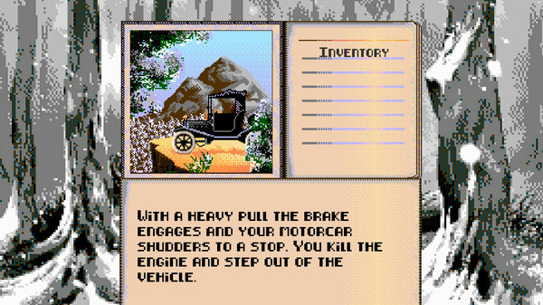
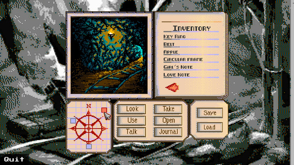
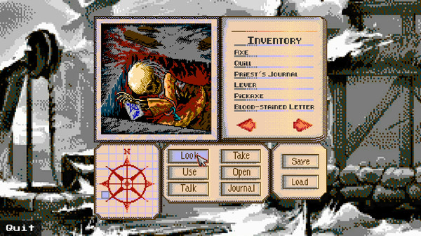

FROM
BEYOND
BEYOND
Nintendo
Status: [TBD — William to confirm]
SuckerFree Games presents
“In the winter of 1910, professor Crawford Tillinghast mounted an expedition into the mountains of Europe… This is his story.”
Physical cartridges are coming. Join the notify list.
The game
Professor Crawford Tillinghast goes searching for a lost mountain village shrouded in myth. From Beyond: Prologue is a point-and-click horror adventure with graphics and sound inspired by classic Nintendo-era games.
Released on Steam on 7 December 2018 (early access from 20 November 2018) for PC, Mac and Linux.



In development
The game is being ported to real physical cartridges for three classic systems.
Status: [TBD — William to confirm]
Status: [TBD — William to confirm]
Status: [TBD — William to confirm]
Cartridge drawings are CSS illustrations — placeholder concept art, not photos of real hardware.
Because the game was made to feel like a classic cartridge-era adventure, and now it can run on that kind of hardware. A physical release is something you can hold, play on the original consoles, and put on the shelf.
Distribution is planned through a Kickstarter, coming “soon-ish”. Sign up below and you'll hear the moment it goes live.
Yes — From Beyond: Prologue is on Steam for PC, Mac and Linux.
Nintendo, Genesis, and Game Boy / Game Boy Color.
Not at the moment. A Switch version is a possible future port only.
To be announced. There's no price or ship date yet.
To be announced.
To be announced. Join the notify list and you'll get an email when it does.
One email when there's real news. No spam.